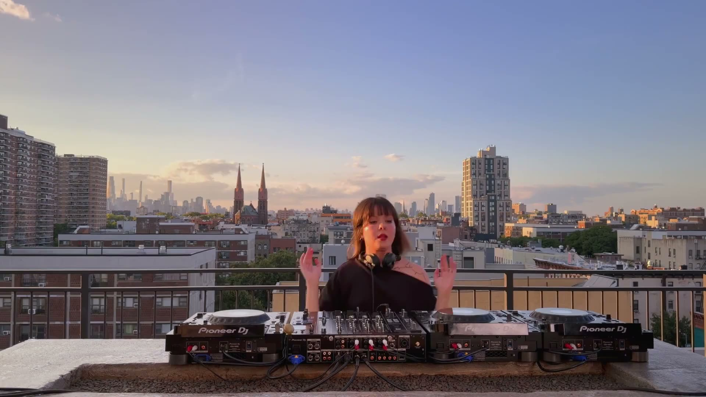
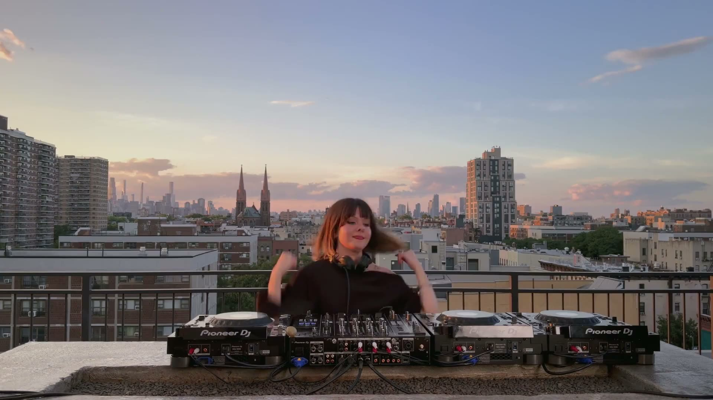
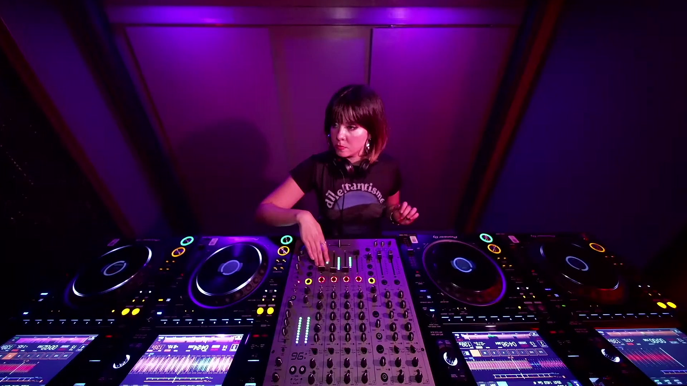
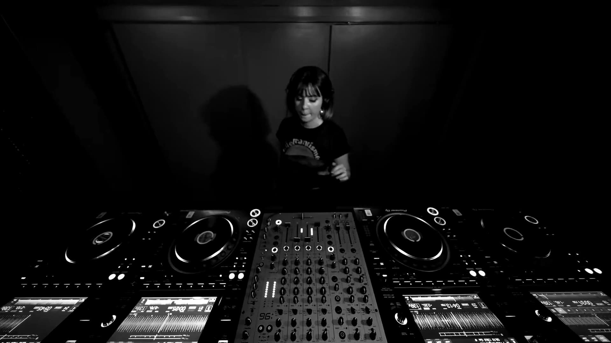

Abeille
Istanbul-born, New York-based DJ.
Abeille
Melis Eser. Groovy, hypnotic techno, left-field house, ambient and old-school breakbeat.
Watch Abeille playListen
Istanbul‑born, New York‑based.
ABEILLE is an Istanbul-born, New York-based DJ and emerging artist with five years of experience in the underground electronic music scene. Her sound moves through groovy, hypnotic techno, alongside left-field house, ambient, and old‑school breakbeat.
Contact me.
Rooftop footage: _nevs tv. Club footage: Below Grūnd. Photographs: @ceninvoncatlien2, @erikpel and @donxulio_.